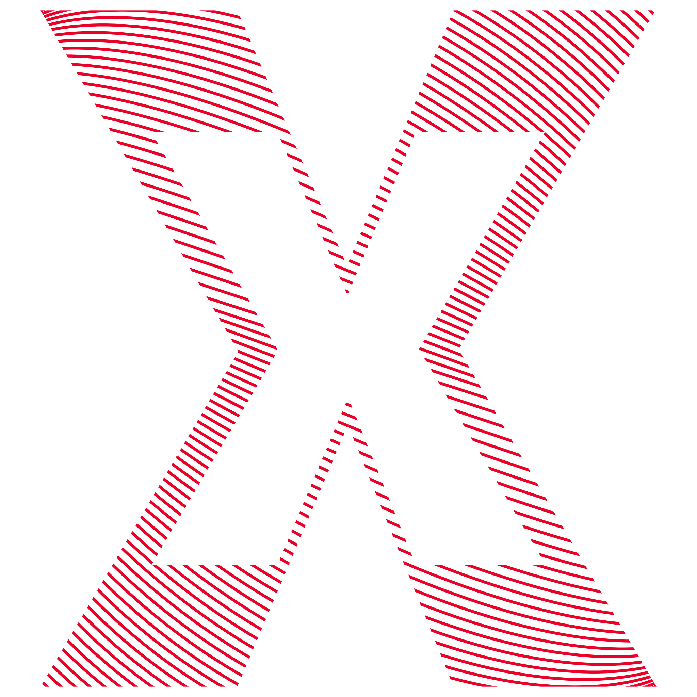
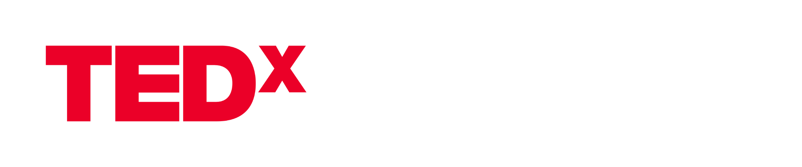
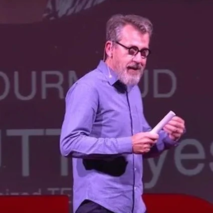
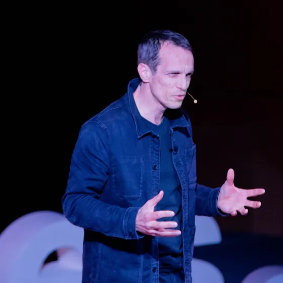
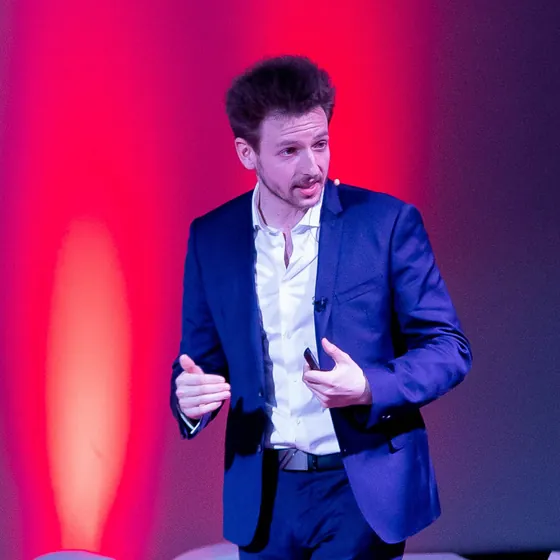

← Votre billet nominatif
Déjà passés sur notre scène

Jamy Gourmaud
TEDxUTTroyes 2017

Vincent Doumeizel
TEDxUTTroyes 2023

Léo Techmaker
TEDxUTTroyes 2023
Thème de la soirée
Quand
Jeudi 18 mars 2027
Portes à 18h00, premier talk à 19h30
Où
Centre de Congrès
de l'Aube
2 rue Pierre Labonde, 10000 Troyes
Feuille de salle
À l'entrée
Présentez ce billet imprimé ou sur votre téléphone : le code est scanné au contrôle. Une pièce d'identité pourra vous être demandée.
Le premier talk commence à 19h30 précises : prévoyez d'être sur place au moins un quart d'heure avant.
Le Centre de Congrès est à un quart d'heure à pied de la gare de Troyes.